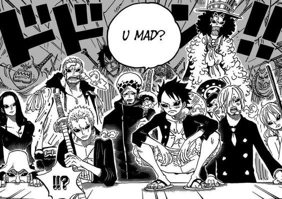

What is One Piece?
The One Piece is the driving goal of Monkey D. Luffy and his crew, as well as that of multiple other pirates, who all seek to claim the treasure in order to become the next Pirate King, following Roger's dying words at his execution.
After decades of speculations and doubts, the treasure's existence was confirmed by Whitebeard with his last breath. He mentioned that "a grand battle will engulf the entire world" and "the world will be shaken to its core" when the One Piece is found.
"Miracles only happen to those who never give up."
It should be noted that the name "One Piece" did not originate from Roger himself, but rather the "world at large" who did not know what the treasure actually was. Roger acknowledged this name as something the people had chosen, but did not use it during his famous last words. Instead, he simply mentioned "[his] treasure" (俺の財宝, ore no zaihō) left at "that place" (そこに, soko ni). Despite this, the 4Kids translation changed Roger's speech to include the name of the treasure: "I left everything I own in One Piece."